From a single photo
to a scored rollout.
From single reference images of real-world robot recordings, our pipeline constructs diverse, interactable 3D simulation environments for policy evaluation. For each task, a coding agent decomposes the instruction into stages and authors deterministic scoring functions that report both terminal success and continuous progress.
Evaluating robot policies at scale remains a fundamental bottleneck: real-world testing is costly and difficult to reproduce, while simulation benchmarks require substantial environment engineering and manually designed task evaluators. We introduce RobotArena∞ 360, a framework for scalable, simulation-native evaluation of robot policies. Given a single image of a real manipulation environment, RobotArena∞ 360 constructs a fully 3D interactive digital twin by combining generative 3D reconstruction with metric alignment and collision-aware geometry, supporting arbitrary camera viewpoints including wrist cameras and exposing privileged physical state for evaluation. We further introduce agentic scoring: rather than using foundation models to directly judge rollout videos, a coding agent translates natural-language tasks into deterministic programs over simulator state. These programs decompose tasks into interpretable physical milestones and measure both binary success and continuous progress without model inference at evaluation time. We instantiate 20 environments from DROID and benchmark six state-of-the-art policies spanning diverse architectures. Our experiments reveal substantial differences between policies that are obscured by binary success alone, identify important sources of simulation-evaluation mismatch, including shadows, controller dynamics, and inference latency, and show that agent-generated evaluators agree more closely with human judgments than VLM-based scoring. Together, RobotArena∞ 360 turns existing robot datasets into programmable evaluation platforms even under limited camera views or lack of complete environment or object scans, while substantially reducing human effort and cost.
Twenty real scenes,
each from a single photo.
Each environment starts from a single reference image of a real manipulation scene. We decompose the image into task-relevant objects and a static background, reconstruct object assets and a full-scene 3D Gaussian background, recover collision geometry and stable support surfaces, and metrically align everything to the simulator camera and robot workspace. Because the result is a true 3D scene rather than a planar backdrop, it supports arbitrary viewpoints — including wrist-mounted cameras — and the surrounding surfaces participate physically in manipulation.
We instantiate 20 environments from DROID, which means existing robot recordings can be repurposed into reusable evaluation environments with no dedicated scene scan. All environments run in Eden, a Genesis-based platform with Gaussian-scene rendering via the Nyx ray tracer, and use a Franka FR3 with a Robotiq 2F-85 gripper.
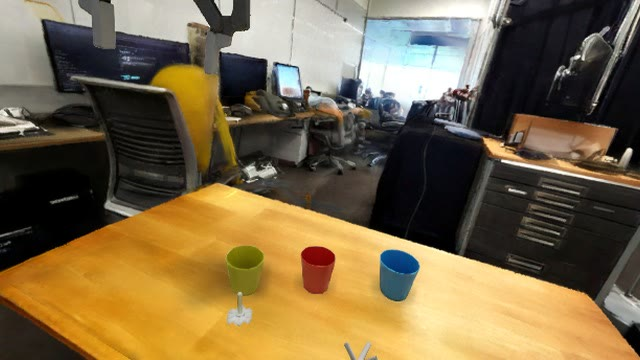
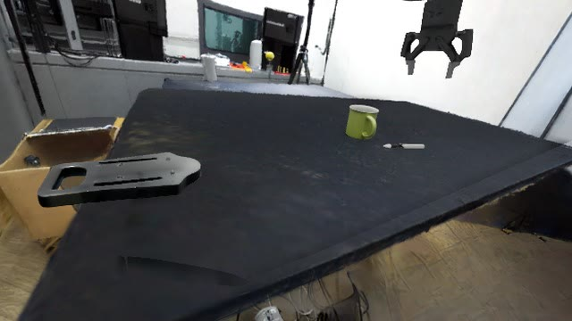
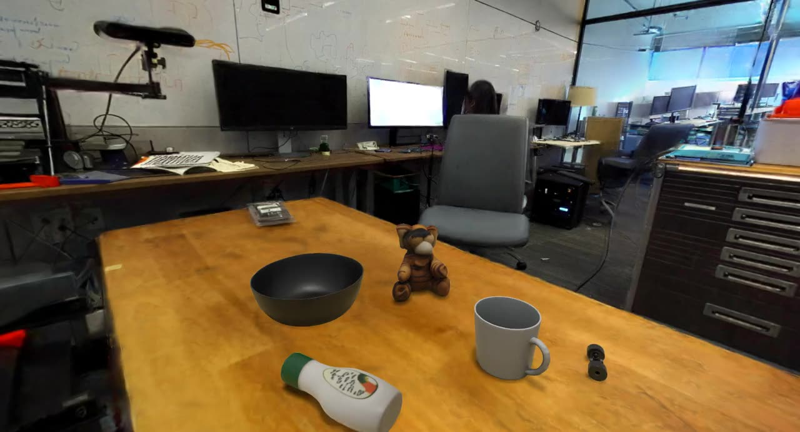
RealSimulationMove across the photo.
It turns into its simulation.
The real DROID frame on the left, the reconstructed digital twin on the right: object assets, a Gaussian background with collision geometry, aligned to the robot camera.
Rebuild the world.
Then let an agent write the judge.
01Real-to-sim transfer with an interactable background
Building on RobotArena∞'s foreground-object pipeline, we pair task assets with a full-scene 3D Gaussian background. Recovering collision meshes and fitting stable operation-surface planes makes that background physically usable rather than decorative, and a pose-and-scale alignment step puts the reconstruction in metric correspondence with the simulator camera and robot workspace. The single-image requirement is what lets the benchmark grow: users can reconstruct and share their own workspaces, and datasets that lack dedicated scans still become evaluation environments.
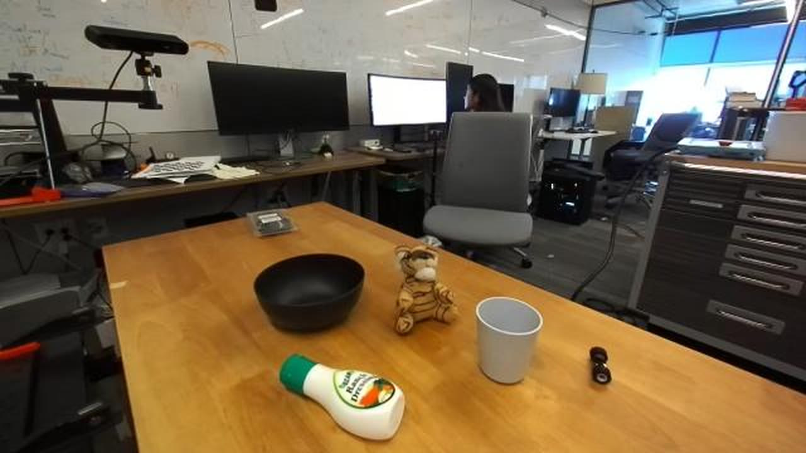
DROID · exterior camera · 1 frameThe only input: a single frame of an existing DROID recording. No scene scan, no multi-view capture.
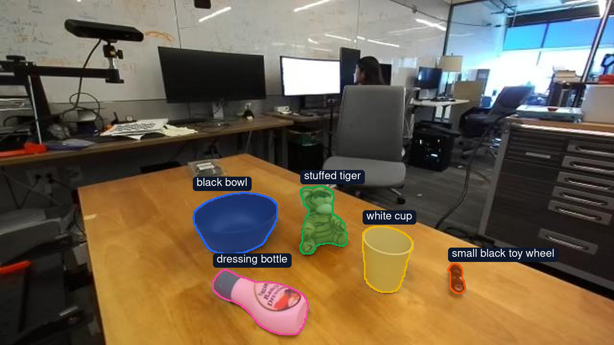
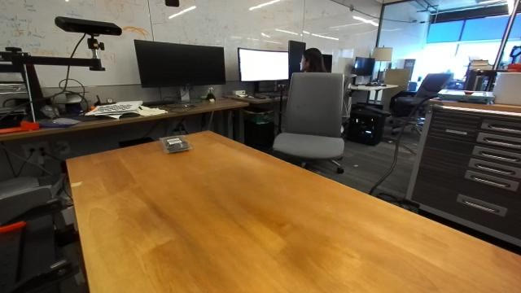
Foreground objectsClean backgroundGemini boxes and labels the task-relevant objects, with a coarse mass and friction for each; the objects, robot and people are masked and inpainted away, leaving a clean background plate. Drag across to compare.
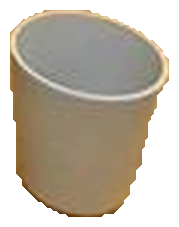
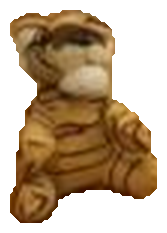
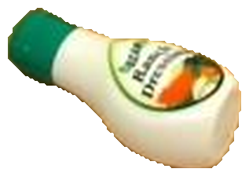
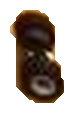
Each object is reconstructed as its own 3D asset with the estimated physical properties, ready to be placed in the scene and grasped.
The background becomes a full-scene 3D Gaussian field for rendering, and a recovered collision mesh makes it physically usable rather than decorative.
A vision–geometry–physics loop refines where each object sits, a scale search puts the generated world in metric correspondence with the robot’s depth, and stable support planes are fitted.
The interactable digital twin: the objects settle under physics on a background that renders from any viewpoint, wrist cameras included.
02Agentic progress scoring
Realistic environments alone do not solve scoring. Given an instruction and sample trajectories, a coding agent resolves object references, decomposes the task into physical milestones, and authors geometric and temporal scoring functions over privileged simulator state. Video is consulted only when scene context or spatial annotations are ambiguous. Once frozen, the evaluator runs deterministically over the state stream — online or from recorded rollouts — with no further model inference.
The evaluator emits a binary success verdict alongside a continuous progress score, so you learn not just whether a task succeeded but how far it got, and milestone traces show exactly where execution stalled. Because the coding agent is invoked once per task rather than once per rollout, synthesis cost amortizes across the whole benchmark.
Task instruction
“put toy bear into black bowl”
Privileged simulator state
- End-effector pose + gripper action
- Pose and extent of all 5 objects
Rollout observation
Consulted only when the scene or spatial terms are ambiguous.
Task specification
- archetype
place_in- actor
- “toy bear” → stuffed tiger obj 2
- receptacle
- black bowl obj 0
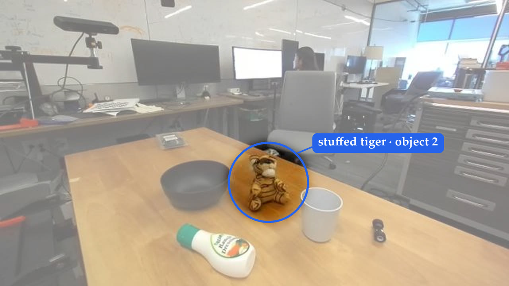
The label says tiger, the instruction says bear: the only plush toy in the scene is resolved as the actor.
Stage decomposition & weights
- approachstart0.03
- engageafter approach0.05
- liftafter engage · 6 cm0.07
- transportafter engage0.25
- place inafter transport0.60
Strict channel · success
- bear’s centre over the bowl’s mouth
- underside ≥ 2 cm below the rim, above the base
- bear at rest (< 5 mm/s)
- all of it ≥ 0.9, held for 30 steps
success = 1 only if all four hold
Soft channel · progress
score(t) = max( Σk wk·smooth(softk(t))·gatek(t), terminal(t) )
gatek = 0.25 + 0.75 · running max of its prerequisites, so a lost grasp does not erase earlier credit.
The generated evaluator for this task, verbatim droid2.py
"""droid2 — "put toy bear into black bowl".""" from evalkit.archetypes import place_in from evalkit.spec import TaskSpec # 0 black bowl 1 white cup 2 stuffed tiger 3 dressing bottle 4 small black toy wheel # "toy bear" -> stuffed tiger (2): the only stuffed animal; the label disagrees on species # but nothing else in the scene is a plush toy. BEAR, BOWL = 2, 0 stages, terminal = place_in(BEAR, BOWL, lift_dz=0.06) TASK = TaskSpec( scene="droid2", instruction="put toy bear into black bowl", objects={"bear": BEAR, "bowl": BOWL}, stages=stages, terminal=terminal, notes="Bear (11x13x7cm) barely fits the bowl mouth (15x15cm); placement is tight.", )
Watch an evaluator score real rollouts
The same evaluator on four real rollouts of this task: the video, the stage it is in, each stage term with its weight, and the progress score as it is computed. Click or drag on the chart to scrub; pick a policy to replay it.
Six generalist policies,
twenty environments.
Six state-of-the-art generalist policies across 20 DROID-reconstructed environments. Each policy uses its official DROID-finetuned checkpoint with no adaptation to our environments, absolute joint-position control, and six rollouts per task over 1200 simulation steps. All policies share the same simulation parameters, robot configuration, and camera setup, except that Cosmos3 receives one additional view to match its native inference configuration.
What binary success hides,
and what the simulator changes.
01Stage-wise progress traces
Four rollouts of “put toy bear into black bowl”. The ribbon shows the stage the policy is working on, thin curves are the stage terms, the yellow line is the progress score, and numbered frames mark key moments; ▼ marks the first step the object leaves the table. (a, b) Cosmos3 and π0.5 succeed at 12 s and 9 s. (c) π0-FAST reaches the bowl rim without ever lifting the bear (0.57, stuck in transport). (d) GR00T N1.7 reaches the bear but never closes on it (0.16, stuck in engage). Hover a plot to read the score over time.
Success and progress give the same policy ordering (see the leaderboard) but describe different things: success measures completion, progress also credits advances in rollouts that fail. Two failed rollouts can still be told apart — π0-FAST drags the bear to the rim of the bowl and earns 0.57, while GR00T N1.7 never grasps it and stays at 0.16.
02Deployment fidelity and policy sensitivity
Three deployment choices that a real-to-sim benchmark has to make — the controller gains, how shadows are rendered, and whether the simulator waits for the policy — each evaluated on MolmoAct-2, GR00T-N1.7 and π0.5 (asynchronous execution: π0.5 and MolmoAct-2), paired per task against the benchmark setup.
Controller gains
(a) Success rate and (b) mean progress under three PD-gain profiles: stock (Eden defaults), sysid-A (identified across all policies’ rollouts) and sysid-B (identified on π-policy rollouts). All three are fixed tables applied to every policy. Δ is the paired per-task difference from stock; error bars show 95% confidence intervals.
Neither system-identified profile improves on the stock gains for any tested policy: sysid-A lowers success for all three (most for GR00T-N1.7, −0.12), and sysid-B costs MolmoAct-2 the most (−0.14) while leaving GR00T-N1.7 unchanged. Policies differ in how sensitive they are to the same adjustment, which is an argument for robustness checks alongside calibration.
Shadow rendering
(a) Success rate and (b) mean progress with a textured-mesh versus a Gaussian-composite shadow receiver, stock gains throughout. (c) What each receiver renders. Δ is the paired per-task difference (Gaussian composite − textured mesh); error bars show 95% confidence intervals.
The two rendering configurations favor different policies. MolmoAct-2 does better with Gaussian compositing (+0.11 success), π0.5 with the textured receiver (−0.16), and GR00T-N1.7 barely moves.
Asynchronous execution
(a) Success rate and (b) mean progress under blocking execution (tint) and asynchronous execution in real time (full colour), paired over 20 tasks. Under each group is the latency the asynchronous runner injects: each policy’s own measured round-trip. Error bars show 95% confidence intervals.
Asynchronous execution advances the simulation while the policy computes its next action, so commands can land after the state that prompted them has changed. The effect depends on the policy: π0.5, with 87 ms of latency, gains (+0.09 success, +0.10 progress), while MolmoAct-2, at 868 ms, loses (−0.10 and −0.05). No interval excludes zero, though. What is measurable is the time cost: MolmoAct-2’s median time to first grasp roughly doubles, from 6.8 s to 14.0 s.
03Validation of synthesized evaluators
Agreement with human progress scores on RobotArena∞. (a) Predicted versus human score for each of the 80 videos, with a least-squares line and Pearson r per scorer. (b, c) Pearson, Spearman, and Kendall correlations and mean squared error for our evaluator and GVL (Gemini), using RobotArena∞’s reduction: the mean over the final 30% of frames. Error bars show 95% paired-bootstrap confidence intervals.
Applying the same synthesis procedure to RobotArena∞ tasks, the generated evaluators agree with human judgments more closely than GVL — higher Pearson, Spearman, and Kendall correlations (0.88, 0.86, 0.75 versus 0.81, 0.78, 0.64) and lower mean squared error (0.045 versus 0.069). The cost profile differs too: GVL needs VLM inference for every trajectory, while our evaluator is frozen after synthesis and runs deterministically over simulator state.